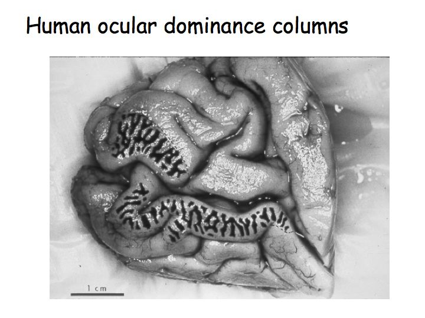
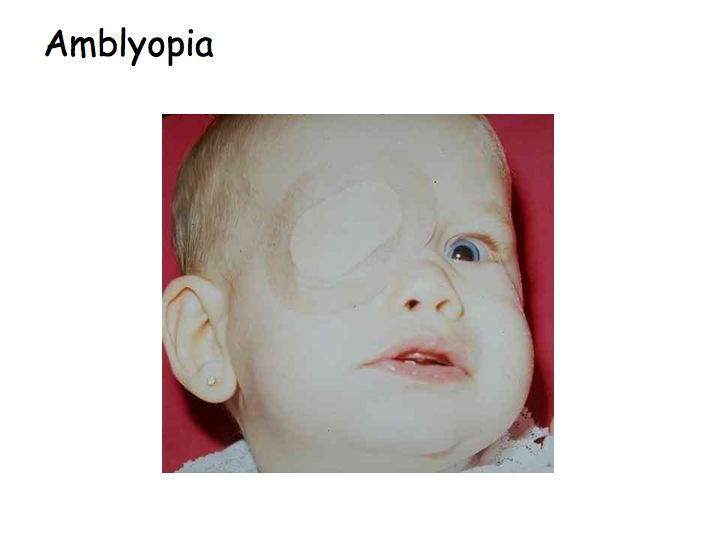

Central Visual Pathways
Instructions:
Overview: The retinal ganglion cells group together at the optic disk forming the optic nerve. The two optic nerves merge at the optic chiasm at the base of the hypothalamus of the brain, where about half of the axons from each eye cross to the other side, and then continue on as the optic tract to the Lateral Geniculate Nucleus (LGN) of the thalamus. At the chiasm, the axons from the nasal half of each retina cross over to the opposite side (decussate). The optic tracts contain axons that respond to the contralateral visual field. Most ganglion cells synapse at the LGN. The LGN is a sensory relay nucleus in the thalamus of the brain. The LGN consists of six layers. Layers 1, 4, and 6 correspond to information from the contralateral (crossed) fibers of the nasal retina (temporal visual field); layers 2, 3, and 5 correspond to information from the ipsilateral (uncrossed) fibers of the temporal retina (nasal visual field). LGN neurons then project to the primary visual cortex (V1/striate cortex) via optic radiations.
Striate cortex
There is a direct correspondence from an angular position in the visual field of the eye, the axons map the retina point-by-point, creating a retinotopic projection all the way through the optic tract to a nerve position in V1 (up to V4, i.e. the primary visual areas. After that, the visual pathway is roughly separated into a ventral and dorsal pathway). The projection is distorted for the foveal region, which occupies nearly half of the visual cortex. When viewed from the surface, each micro-region of the cortex (hypercolumn) is divided in two parts, one half for each eye; these are called ocular dominance columns. Axons from both eyes that cover the same region in visual space converge to side-by-side slabs of the cortex. About half of the cortical cells are binocular - they are sensitive to inputs from both eyes and help to mediate depth perception. This is a picture of a post-mortem human brain (medial view of the occipital lobe and the Calcarine sulcus). This patient had lost an eye before they died so only the neurons responding to the other eye were active. The patient had given permission for their brain to be removed and analyzed immediately after they had died. The brain was stained for cytochrome oxidase (an enzyme used in cellular metabolism) so the dark stripes correspond to brain regions that had been recently metabolically active. In other words, the dark and light stripes are this patient's ocular dominance columns.
In this tutorial, ocular dominance columns are represented by different colors. Click on one of the eyeballs to see its visual projections.
Amblyopia
Amblyopia, also called lazy eye, is the most common cause of decreased vision in a single eye among children and younger adults (prevalence between 2-5%). The cause of amblyopia can be any condition that interferes with visual image generation during early childhood. The part of the brain receiving images from the affected eye is not stimulated properly and does not develop to its full visual potential. This has been confirmed by direct brain examination. David H. Hubel and Torsten Wiesel won the Nobel Prize in Physiology or Medicine in 1981 for their work in showing the extent of the damage to ocular dominance columns produced in kittens by sufficient visual deprivation during the so-called critical period. The maximum critical period in humans is from birth to two years old.
The 'Amblyopia' button simulates reduced visual acuity in the left eye. If left untreated, most LGN and cortical cells in Amblyopia patients become monocular, responding only to axonal projections from the good eye even if the visual deficit is resolved. In this scenario, thalamic layers that respond to the amblyopic eye degenerate and cortical dominance columns over-represent the good eye.
Treatment consists of correcting the optical deficit and often forcing use of the amblyopic eye, by patching the good eye, or instilling topical atropine in the good eye, or both. After the underlying cause is fixed, vision is not restored right away, as the mechanism also involves the brain.

Visual field deficits
Visual deficits is an important to diagnostic tool for neurological damage.•Damage to the retina or the optic nerve results in a loss of vision that is limited to the eye of origin.
•Damage to the optic chiasm (which is often the result of pituitary tumors) can affect the fibers that are crossing from the nasal retina of each eye, leaving the uncrossed fibers from the temporal retinas intact.
•Damage to structures that are central to the optic chiasm results in deficits that are limited to the contralateral visual hemifield.
•Damage to the optic radiation are typically limited to a portion of the visual field.
•Injury to central visual structures can also lead to a phenomenon called macular sparing, i.e., the loss of vision throughout wide areas of the visual field, with the exception of foveal vision.
•Macular sparing is commonly found with damage to the cortex, but can be a feature of damage anywhere along the length of the visual pathway. Although several explanations for macular sparing have been offered, including overlap in the pattern of crossed and uncrossed ganglion cells supplying central vision, the basis for this selective preservation is not clear.
https://www.ncbi.nlm.nih.gov/books/NBK10912/ https://en.wikipedia.org/wiki/Amblyopia Composed by Alon Poleg-Polsky, 2019alon.poleg-polsky@ucdenver.edu